Collaboration with
Union — Jakarta & Surabaya
Amarena Black Forest yang jadi ikon baru, dipadu Amarena Cherry Cocktail dengan buah cherry utuh dari toplesnya.
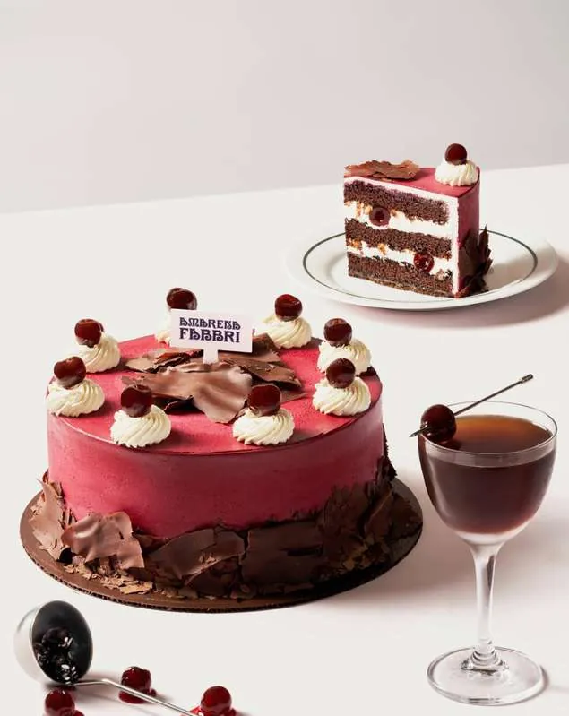
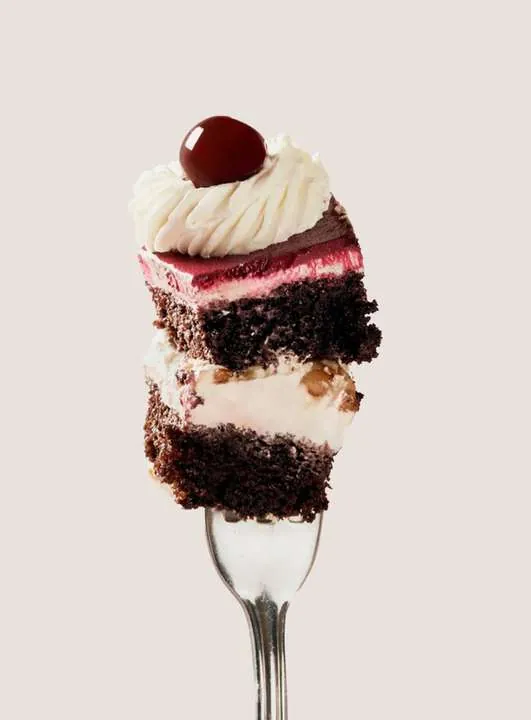
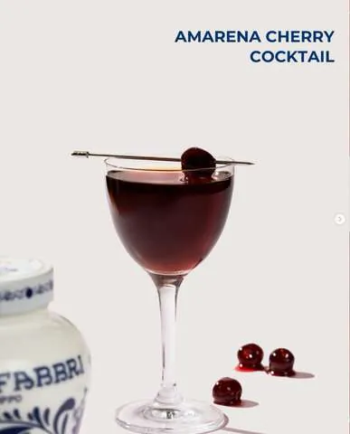
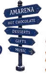
One Iconic Italian Ingredient,
Satu toples Amarena Fabbri, ribuan cara merayakannya. Selama dua bulan, Jakarta berubah menjadi festival: setiap brand partner meluncurkan kreasi Amarena versinya sendiri, dan kota menjadi panggungnya.

Satu resep. Lima generasi. Nol peniru yang berhasil menyamainya. Berawal dari sebuah toko kelontong kecil di dekat Bologna, formulanya tetap terkunci dan toples biru-putihnya tak pernah salah dikenali.
Previous Amarena Collaborations
Kolaborasi yang sudah berjalan bersama brand F&B Indonesia
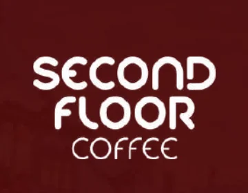
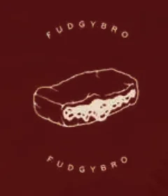
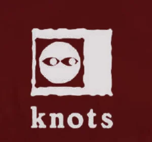
Amarena Black Forest yang jadi ikon baru, dipadu Amarena Cherry Cocktail dengan buah cherry utuh dari toplesnya.



Sesi cupping kopi dengan Amarena, tasting menu signature, dan kampanye visual toples Amarena di tengah skyline Jakarta.
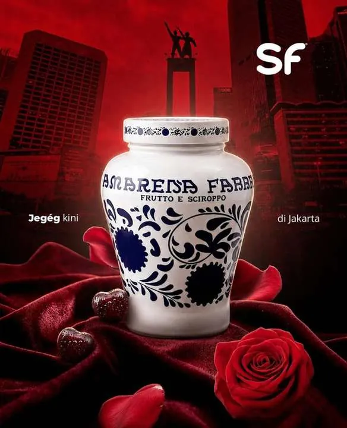
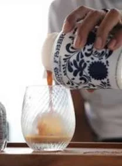
Peluncuran bersama Knots for Rahasia: Amarena cake, soft serve, dan waffle yang jadi rebutan di hari pertama.
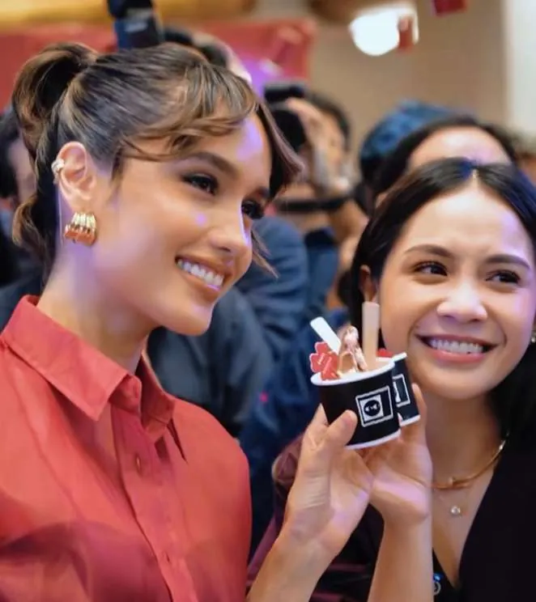
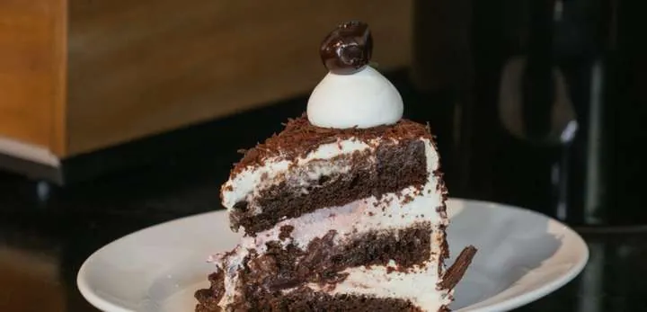
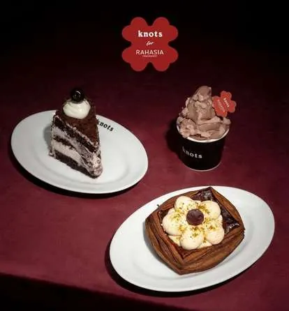
Amarena Series edisi terbatas: Cookie Bomb Amarena, Amarena Brownie with Ice Cream, dan Softbro Amarena Brownie.
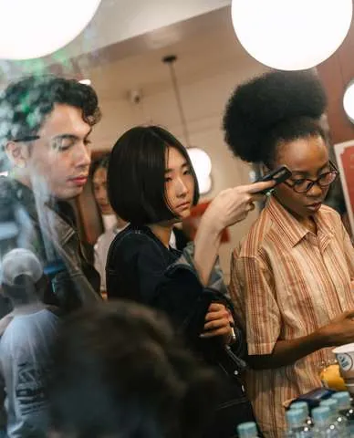
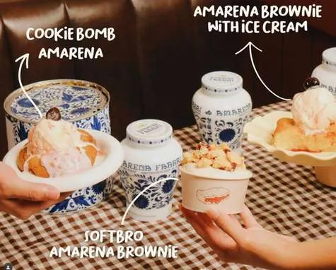
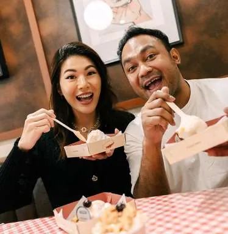
1 Cherry, 20 Brands
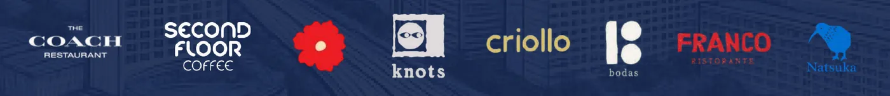
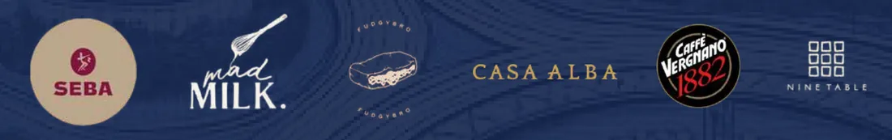
and many more
20 lokasi partisipan di Jakarta
Coffee shop, bakery, pastry shop, bar, gelato shop
Benefit for Your Brand
Tarik lebih banyak pengunjung lewat aktivasi festival dan kolaborasi lintas brand.
Jadi bagian dari pengalaman bertema Amarena yang dikurasi, bukan sekadar promo.
Dorong visibilitas brand dan menu signature Anda ke audiens baru.
Tercatat sebagai brand peserta edisi perdana Amarena Festival.
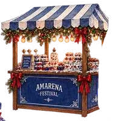
Amarena Recipe Book
Pastry · Dessert · Cocktail · dan lainnya
 Apple Cake
Apple Cake Cherry Crumble
Cherry Crumble Brownies
Brownies Tiramisu
Tiramisu Puff Pastry Roll
Puff Pastry Roll Fruit Bowl
Fruit Bowl Amarena Spritz
Amarena Spritz Gelato
Gelato Yoghurt Ice Pops
Yoghurt Ice Pops Avocado & Salmon Salad
Avocado & Salmon SaladBelum punya ide menu? Tim R&D Toffin mendampingi brand partner mengembangkan kreasi Amarena, dari resep sampai aplikasi di bar dan dapur.
Event Experience
Three phases. One complete journey.
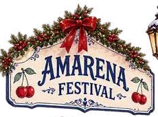
21 November 2026
The First Amarena Spark
23 Nov 2026 – 16 Jan 2027
The Amarena Festival
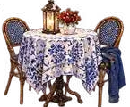
16 Januari 2027
A Night to Remember
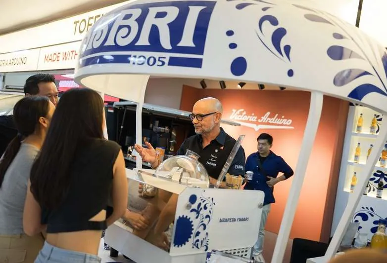
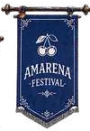
Momen peluncuran yang dikurasi di ruang publik atau di brand terpilih, dirancang untuk membangun awareness dan antisipasi sebelum festival utama dimulai.
Gelombang pertama buzz Amarena Festival.
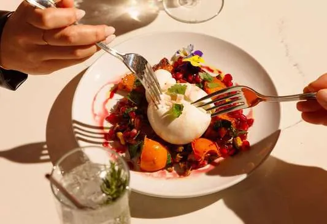
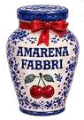
Selama 2 bulan, 20 brand partisipan meluncurkan kreasi Amarena mereka sendiri di lokasi masing-masing. Apa yang dilakukan pelanggan?
The city becomes the festival.
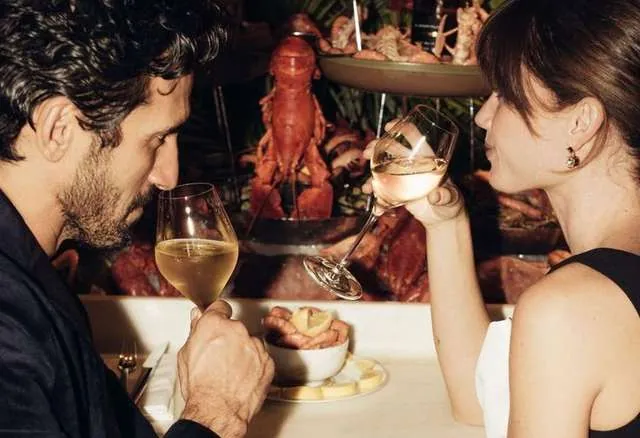
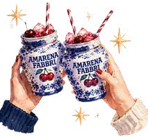
Grand finale yang mengumpulkan seluruh komunitas Amarena Festival untuk satu perayaan terakhir.
One last night. One big Amarena celebration.
Event Story Teller
Wajah & media yang membawa cerita festival
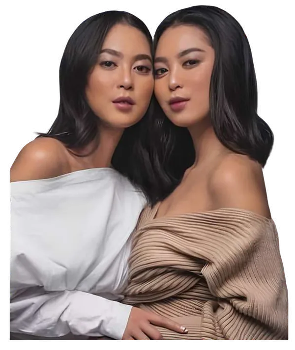
Rahajeng The Sisters memimpin penceritaan Amarena Festival lewat konten premium, engaging, dan relevan secara budaya.
Dengan latar belakang kuat di media, fashion, lifestyle, dan international brand storytelling, mereka menjadi salah satu wajah utama festival: merekam pengalaman, menyorot brand partisipan, dan memperkenalkan dunia Amarena Fabbri ke audiens yang lebih luas.
To be confirmed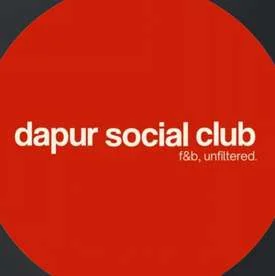
Media Story TellerHadir sebagai media partner untuk memperdalam cerita di balik brand partisipan: kisah, perjalanan, dan perspektif kreatif para chef dan founder.
Lewat konten editorial khusus, mereka mengulik apa yang menginspirasi, hubungan mereka dengan Amarena Fabbri, dan ide di balik kreasi festivalnya.
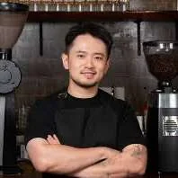
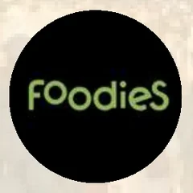
Kreator kuliner dan media lifestyle Jakarta yang kami undang untuk menjelajahi setiap pemberhentian Amarena Festival dan membagikan perjalanannya.
Lady Amarena Finalist 20263rd Place Lady Amarena 2026
World Certified Barista Judge & Beverage Specialist
Top 3 brand partisipan mendapat Lady Amarena Takeover eksklusif.
Amarena Digital Passport
Turn every stop into a story
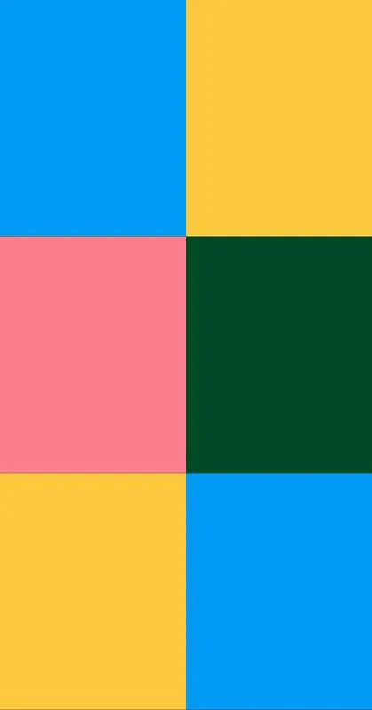
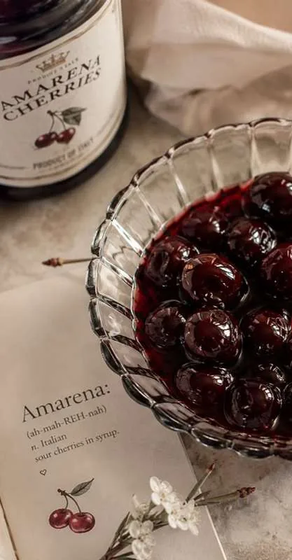
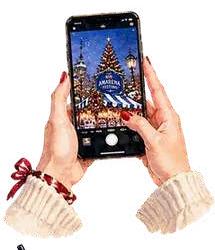
Explore → Taste → Share & Stamp → Unlock
Jelajahi brand partisipan dan kreasi Amarena mereka.
Pilih, pesan, dan nikmati kreasi Amarena favoritmu.
Pakai template Instagram Story kami dan bagikan momen Amarena-mu.
Capai setiap milestone dan dapatkan undangan ke Closing Night.
Our Support
Apa yang Toffin & Fabbri siapkan untuk brand partner
Branding & Marketing
Tampil di kanal sosial Fabbri & Toffin Indonesia
Brand Anda masuk peta festival digital yang disebar di semua kanal kampanye
Diliput lewat outreach media lifestyle dan F&B tertarget
KOL dan food creator terpilih berkunjung dan membagikan perjalanan Amarena mereka
Tent card dan stiker official partner disediakan untuk memperkuat visibilitas
Sales & R&D
Harga eksklusif sepanjang periode festival
Stok dicadangkan agar produk yang cepat habis tetap aman
Pendampingan tim R&D untuk pengembangan produk dan aplikasinya
Grazie!
Slot brand partner terbatas untuk 20 lokasi di Jakarta. Hubungi tim Toffin untuk detail partisipasi, harga event, dan dukungan R&D.
Brought to you by